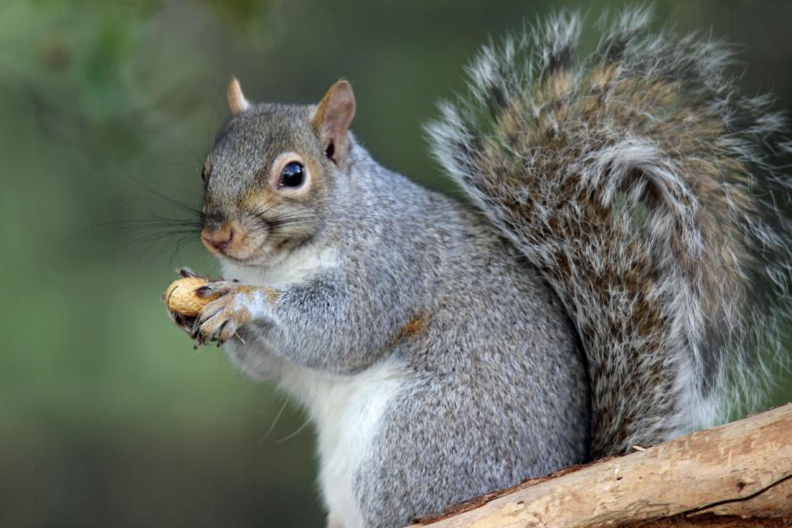
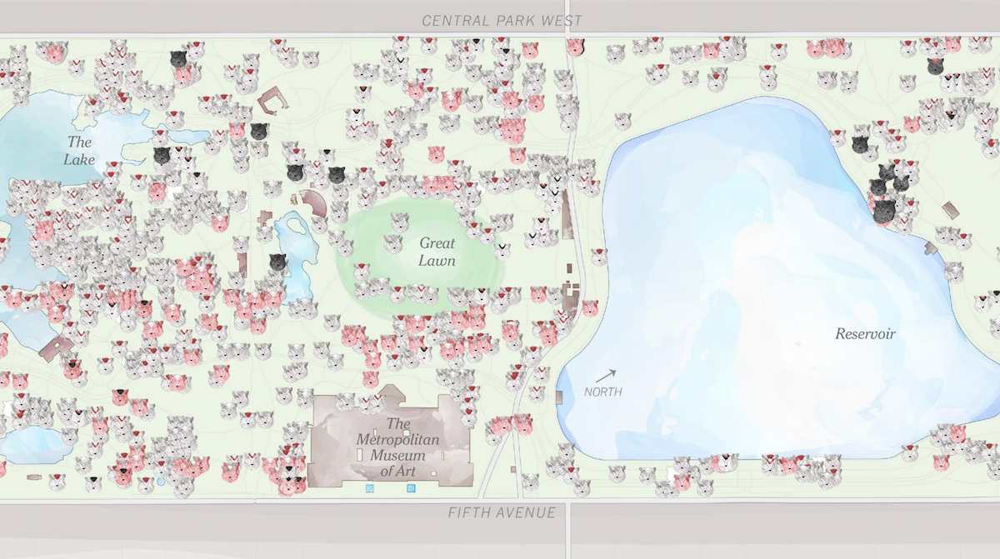

Brief Description/Background of Dataset and Agency
Background of Dataset: This database is about a comprehensive, crowd-sourced record of the Eastern Gray Squirrel population in Central Park, New York. The dataset acts as a blend of urban ecology and civic art, breaking down the park into a grid of hectares to log highly specific information about these squirrels. Collected by hundreds of volunteers over two weeks in October 2018, it maps the physical traits, behaviors, and localized habitats of over 3,000 squirrel sightings!
Agency Description: The 2018 Central Park Squirrel Census dataset on NYC Open Data was created by The Squirrel Census, an independent multimedia science and storytelling project. It is the brainchild of writer Jamie Allen, who previously ran similar grassroots volunteer counts in Atlanta.
Summation of Info and Analyses
On the info page, you can easily filter out 1,000 cards regarding squirrel information based on their age and fur color! On the analysis page, you are able to use 4 charts to filter out the squirrels' location annd their primary fur color.




Importance & Relevancy of Dataset
This dataset is important because it shows its unique blend of community science, urban ecology, and storytelling, providing valuable data on how wildlife adapts to city environments through research and findings of squirrels around NYC. This purpose is overwhelmingly relevant nowadays---especially appealing to animal-lovers or the younger generation.
My website splits large components of the data found into an easy and satiable manner (found below!)
What this dataset is split into:
- Physical Characteristics: Age (adult or juvenile), as well as primary, secondary, and highlight fur colors (such as gray, cinnamon, or black).
- Activities: What the squirrel was doing at the time of sighting, including foraging, eating, climbing, running, or chasing other squirrels.
- Human Interactions: Details on whether the squirrel approached humans, ran from them, or was entirely indifferent.
- Communication & Sounds: Vocalizations and tail movements recorded, such as "kuk," "quaa," "moan," tail twitching, and tail flagging.
- Geospatial Data: Exact longitude, latitude, and specific environmental context (like tree canopy cover) for each sighting.